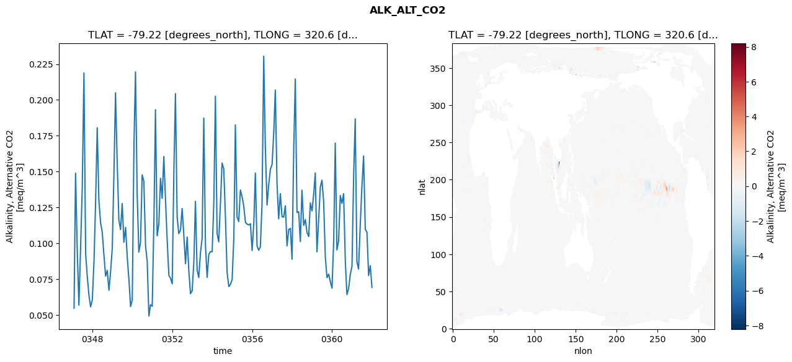
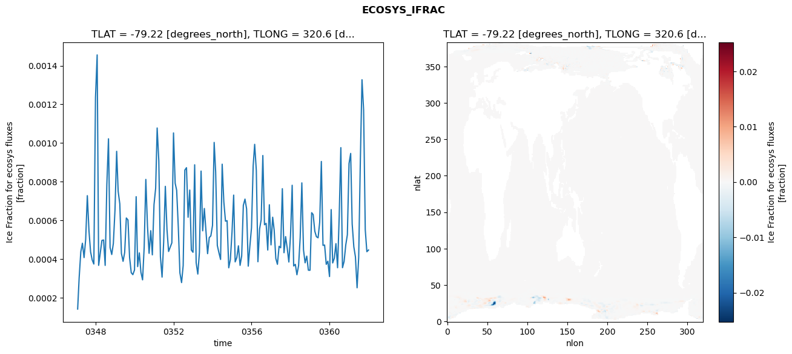
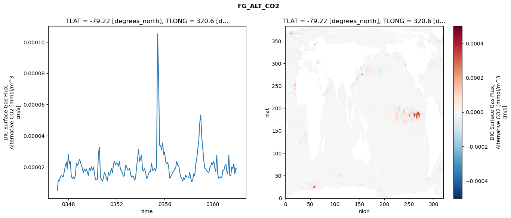
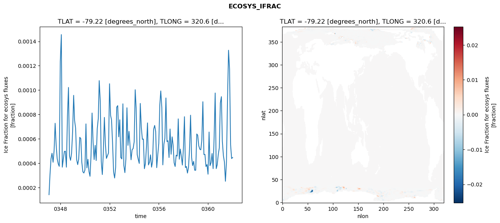
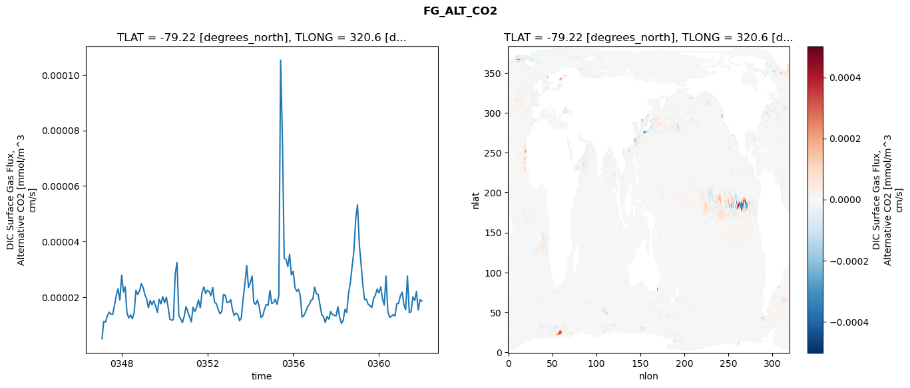
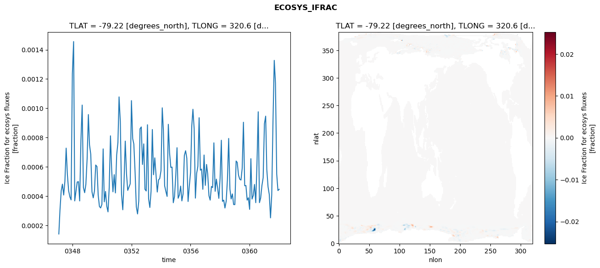
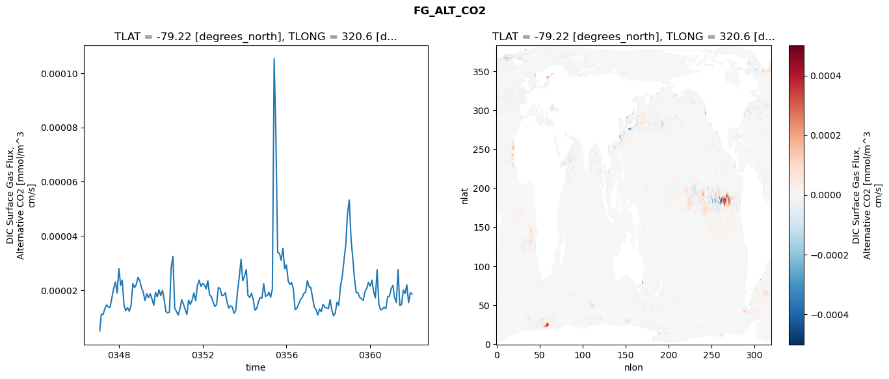

glb-dor_North_Atlantic_basin_000_1999-01-01_00000#
Show code cell source Hide code cell source
import xarray as xr
import matplotlib.pyplot as plt
Show code cell source Hide code cell source
zarr_store = "/path/to/zarr/store"
# Parameters
zarr_store = "/global/cfs/projectdirs/m4746/Projects/Ocean-CDR-Atlas-v0/data/validation/smyle.cdr-atlas-v0.glb-dor_North_Atlantic_basin_000_1999-01-01_00000.001.validation.zarr"
Show code cell source Hide code cell source
%%time
ds_o = xr.open_zarr(zarr_store).compute()
ds_o
CPU times: user 646 ms, sys: 404 ms, total: 1.05 s
Wall time: 1.19 s
<xarray.Dataset> Size: 2MB
Dimensions: (nlat: 384, nlon: 320, time: 180)
Coordinates:
TLAT float64 8B -79.22
TLONG float64 8B 320.6
ULAT float64 8B -78.95
ULONG float64 8B 321.1
* time (time) object 1kB 0347-02-01 00:00:00 ... 0362-01-01 0...
z_t float32 4B 500.0
Dimensions without coordinates: nlat, nlon
Data variables:
ALK_ALT_CO2_diff (nlat, nlon) float32 492kB nan nan nan ... nan nan nan
ALK_ALT_CO2_rmse (time) float64 1kB 0.05481 0.149 ... 0.08451 0.06933
DIC_ALT_CO2_diff (nlat, nlon) float32 492kB nan nan nan ... nan nan nan
DIC_ALT_CO2_rmse (time) float64 1kB 0.0571 0.1464 0.11 ... 0.1438 0.1326
ECOSYS_IFRAC_diff (nlat, nlon) float32 492kB nan nan nan ... nan nan nan
ECOSYS_IFRAC_rmse (time) float64 1kB 0.0001422 0.0003039 ... 0.0004474
FG_ALT_CO2_diff (nlat, nlon) float32 492kB nan nan nan ... nan nan nan
FG_ALT_CO2_rmse (time) float64 1kB 5.053e-06 1.127e-05 ... 1.862e-05xarray.Dataset
- nlat: 384
- nlon: 320
- time: 180
- TLAT()float64-79.22
- long_name :
- array of t-grid latitudes
- units :
- degrees_north
array(-79.22052261)
- TLONG()float64320.6
- long_name :
- array of t-grid longitudes
- units :
- degrees_east
array(320.56250892)
- ULAT()float64-78.95
- long_name :
- array of u-grid latitudes
- units :
- degrees_north
array(-78.95289509)
- ULONG()float64321.1
- long_name :
- array of u-grid longitudes
- units :
- degrees_east
array(321.12500894)
- time(time)object0347-02-01 00:00:00 ... 0362-01-...
- bounds :
- time_bound
- long_name :
- time
array([cftime.DatetimeNoLeap(347, 2, 1, 0, 0, 0, 0, has_year_zero=True), cftime.DatetimeNoLeap(347, 3, 1, 0, 0, 0, 0, has_year_zero=True), cftime.DatetimeNoLeap(347, 4, 1, 0, 0, 0, 0, has_year_zero=True), cftime.DatetimeNoLeap(347, 5, 1, 0, 0, 0, 0, has_year_zero=True), cftime.DatetimeNoLeap(347, 6, 1, 0, 0, 0, 0, has_year_zero=True), cftime.DatetimeNoLeap(347, 7, 1, 0, 0, 0, 0, has_year_zero=True), cftime.DatetimeNoLeap(347, 8, 1, 0, 0, 0, 0, has_year_zero=True), cftime.DatetimeNoLeap(347, 9, 1, 0, 0, 0, 0, has_year_zero=True), cftime.DatetimeNoLeap(347, 10, 1, 0, 0, 0, 0, has_year_zero=True), cftime.DatetimeNoLeap(347, 11, 1, 0, 0, 0, 0, has_year_zero=True), cftime.DatetimeNoLeap(347, 12, 1, 0, 0, 0, 0, has_year_zero=True), cftime.DatetimeNoLeap(348, 1, 1, 0, 0, 0, 0, has_year_zero=True), cftime.DatetimeNoLeap(348, 2, 1, 0, 0, 0, 0, has_year_zero=True), cftime.DatetimeNoLeap(348, 3, 1, 0, 0, 0, 0, has_year_zero=True), cftime.DatetimeNoLeap(348, 4, 1, 0, 0, 0, 0, has_year_zero=True), cftime.DatetimeNoLeap(348, 5, 1, 0, 0, 0, 0, has_year_zero=True), cftime.DatetimeNoLeap(348, 6, 1, 0, 0, 0, 0, has_year_zero=True), cftime.DatetimeNoLeap(348, 7, 1, 0, 0, 0, 0, has_year_zero=True), cftime.DatetimeNoLeap(348, 8, 1, 0, 0, 0, 0, has_year_zero=True), cftime.DatetimeNoLeap(348, 9, 1, 0, 0, 0, 0, has_year_zero=True), cftime.DatetimeNoLeap(348, 10, 1, 0, 0, 0, 0, has_year_zero=True), cftime.DatetimeNoLeap(348, 11, 1, 0, 0, 0, 0, has_year_zero=True), cftime.DatetimeNoLeap(348, 12, 1, 0, 0, 0, 0, has_year_zero=True), cftime.DatetimeNoLeap(349, 1, 1, 0, 0, 0, 0, has_year_zero=True), cftime.DatetimeNoLeap(349, 2, 1, 0, 0, 0, 0, has_year_zero=True), cftime.DatetimeNoLeap(349, 3, 1, 0, 0, 0, 0, has_year_zero=True), cftime.DatetimeNoLeap(349, 4, 1, 0, 0, 0, 0, has_year_zero=True), cftime.DatetimeNoLeap(349, 5, 1, 0, 0, 0, 0, has_year_zero=True), cftime.DatetimeNoLeap(349, 6, 1, 0, 0, 0, 0, has_year_zero=True), cftime.DatetimeNoLeap(349, 7, 1, 0, 0, 0, 0, has_year_zero=True), cftime.DatetimeNoLeap(349, 8, 1, 0, 0, 0, 0, has_year_zero=True), cftime.DatetimeNoLeap(349, 9, 1, 0, 0, 0, 0, has_year_zero=True), cftime.DatetimeNoLeap(349, 10, 1, 0, 0, 0, 0, has_year_zero=True), cftime.DatetimeNoLeap(349, 11, 1, 0, 0, 0, 0, has_year_zero=True), cftime.DatetimeNoLeap(349, 12, 1, 0, 0, 0, 0, has_year_zero=True), cftime.DatetimeNoLeap(350, 1, 1, 0, 0, 0, 0, has_year_zero=True), cftime.DatetimeNoLeap(350, 2, 1, 0, 0, 0, 0, has_year_zero=True), cftime.DatetimeNoLeap(350, 3, 1, 0, 0, 0, 0, has_year_zero=True), cftime.DatetimeNoLeap(350, 4, 1, 0, 0, 0, 0, has_year_zero=True), cftime.DatetimeNoLeap(350, 5, 1, 0, 0, 0, 0, has_year_zero=True), cftime.DatetimeNoLeap(350, 6, 1, 0, 0, 0, 0, has_year_zero=True), cftime.DatetimeNoLeap(350, 7, 1, 0, 0, 0, 0, has_year_zero=True), cftime.DatetimeNoLeap(350, 8, 1, 0, 0, 0, 0, has_year_zero=True), cftime.DatetimeNoLeap(350, 9, 1, 0, 0, 0, 0, has_year_zero=True), cftime.DatetimeNoLeap(350, 10, 1, 0, 0, 0, 0, has_year_zero=True), cftime.DatetimeNoLeap(350, 11, 1, 0, 0, 0, 0, has_year_zero=True), cftime.DatetimeNoLeap(350, 12, 1, 0, 0, 0, 0, has_year_zero=True), cftime.DatetimeNoLeap(351, 1, 1, 0, 0, 0, 0, has_year_zero=True), cftime.DatetimeNoLeap(351, 2, 1, 0, 0, 0, 0, has_year_zero=True), cftime.DatetimeNoLeap(351, 3, 1, 0, 0, 0, 0, has_year_zero=True), cftime.DatetimeNoLeap(351, 4, 1, 0, 0, 0, 0, has_year_zero=True), cftime.DatetimeNoLeap(351, 5, 1, 0, 0, 0, 0, has_year_zero=True), cftime.DatetimeNoLeap(351, 6, 1, 0, 0, 0, 0, has_year_zero=True), cftime.DatetimeNoLeap(351, 7, 1, 0, 0, 0, 0, has_year_zero=True), cftime.DatetimeNoLeap(351, 8, 1, 0, 0, 0, 0, has_year_zero=True), cftime.DatetimeNoLeap(351, 9, 1, 0, 0, 0, 0, has_year_zero=True), cftime.DatetimeNoLeap(351, 10, 1, 0, 0, 0, 0, has_year_zero=True), cftime.DatetimeNoLeap(351, 11, 1, 0, 0, 0, 0, has_year_zero=True), cftime.DatetimeNoLeap(351, 12, 1, 0, 0, 0, 0, has_year_zero=True), cftime.DatetimeNoLeap(352, 1, 1, 0, 0, 0, 0, has_year_zero=True), cftime.DatetimeNoLeap(352, 2, 1, 0, 0, 0, 0, has_year_zero=True), cftime.DatetimeNoLeap(352, 3, 1, 0, 0, 0, 0, has_year_zero=True), cftime.DatetimeNoLeap(352, 4, 1, 0, 0, 0, 0, has_year_zero=True), cftime.DatetimeNoLeap(352, 5, 1, 0, 0, 0, 0, has_year_zero=True), cftime.DatetimeNoLeap(352, 6, 1, 0, 0, 0, 0, has_year_zero=True), cftime.DatetimeNoLeap(352, 7, 1, 0, 0, 0, 0, has_year_zero=True), cftime.DatetimeNoLeap(352, 8, 1, 0, 0, 0, 0, has_year_zero=True), cftime.DatetimeNoLeap(352, 9, 1, 0, 0, 0, 0, has_year_zero=True), cftime.DatetimeNoLeap(352, 10, 1, 0, 0, 0, 0, has_year_zero=True), cftime.DatetimeNoLeap(352, 11, 1, 0, 0, 0, 0, has_year_zero=True), cftime.DatetimeNoLeap(352, 12, 1, 0, 0, 0, 0, has_year_zero=True), cftime.DatetimeNoLeap(353, 1, 1, 0, 0, 0, 0, has_year_zero=True), cftime.DatetimeNoLeap(353, 2, 1, 0, 0, 0, 0, has_year_zero=True), cftime.DatetimeNoLeap(353, 3, 1, 0, 0, 0, 0, has_year_zero=True), cftime.DatetimeNoLeap(353, 4, 1, 0, 0, 0, 0, has_year_zero=True), cftime.DatetimeNoLeap(353, 5, 1, 0, 0, 0, 0, has_year_zero=True), cftime.DatetimeNoLeap(353, 6, 1, 0, 0, 0, 0, has_year_zero=True), cftime.DatetimeNoLeap(353, 7, 1, 0, 0, 0, 0, has_year_zero=True), cftime.DatetimeNoLeap(353, 8, 1, 0, 0, 0, 0, has_year_zero=True), cftime.DatetimeNoLeap(353, 9, 1, 0, 0, 0, 0, has_year_zero=True), cftime.DatetimeNoLeap(353, 10, 1, 0, 0, 0, 0, has_year_zero=True), cftime.DatetimeNoLeap(353, 11, 1, 0, 0, 0, 0, has_year_zero=True), cftime.DatetimeNoLeap(353, 12, 1, 0, 0, 0, 0, has_year_zero=True), cftime.DatetimeNoLeap(354, 1, 1, 0, 0, 0, 0, has_year_zero=True), cftime.DatetimeNoLeap(354, 2, 1, 0, 0, 0, 0, has_year_zero=True), cftime.DatetimeNoLeap(354, 3, 1, 0, 0, 0, 0, has_year_zero=True), cftime.DatetimeNoLeap(354, 4, 1, 0, 0, 0, 0, has_year_zero=True), cftime.DatetimeNoLeap(354, 5, 1, 0, 0, 0, 0, has_year_zero=True), cftime.DatetimeNoLeap(354, 6, 1, 0, 0, 0, 0, has_year_zero=True), cftime.DatetimeNoLeap(354, 7, 1, 0, 0, 0, 0, has_year_zero=True), cftime.DatetimeNoLeap(354, 8, 1, 0, 0, 0, 0, has_year_zero=True), cftime.DatetimeNoLeap(354, 9, 1, 0, 0, 0, 0, has_year_zero=True), cftime.DatetimeNoLeap(354, 10, 1, 0, 0, 0, 0, has_year_zero=True), cftime.DatetimeNoLeap(354, 11, 1, 0, 0, 0, 0, has_year_zero=True), cftime.DatetimeNoLeap(354, 12, 1, 0, 0, 0, 0, has_year_zero=True), cftime.DatetimeNoLeap(355, 1, 1, 0, 0, 0, 0, has_year_zero=True), cftime.DatetimeNoLeap(355, 2, 1, 0, 0, 0, 0, has_year_zero=True), cftime.DatetimeNoLeap(355, 3, 1, 0, 0, 0, 0, has_year_zero=True), cftime.DatetimeNoLeap(355, 4, 1, 0, 0, 0, 0, has_year_zero=True), cftime.DatetimeNoLeap(355, 5, 1, 0, 0, 0, 0, has_year_zero=True), cftime.DatetimeNoLeap(355, 6, 1, 0, 0, 0, 0, has_year_zero=True), cftime.DatetimeNoLeap(355, 7, 1, 0, 0, 0, 0, has_year_zero=True), cftime.DatetimeNoLeap(355, 8, 1, 0, 0, 0, 0, has_year_zero=True), cftime.DatetimeNoLeap(355, 9, 1, 0, 0, 0, 0, has_year_zero=True), cftime.DatetimeNoLeap(355, 10, 1, 0, 0, 0, 0, has_year_zero=True), cftime.DatetimeNoLeap(355, 11, 1, 0, 0, 0, 0, has_year_zero=True), cftime.DatetimeNoLeap(355, 12, 1, 0, 0, 0, 0, has_year_zero=True), cftime.DatetimeNoLeap(356, 1, 1, 0, 0, 0, 0, has_year_zero=True), cftime.DatetimeNoLeap(356, 2, 1, 0, 0, 0, 0, has_year_zero=True), cftime.DatetimeNoLeap(356, 3, 1, 0, 0, 0, 0, has_year_zero=True), cftime.DatetimeNoLeap(356, 4, 1, 0, 0, 0, 0, has_year_zero=True), cftime.DatetimeNoLeap(356, 5, 1, 0, 0, 0, 0, has_year_zero=True), cftime.DatetimeNoLeap(356, 6, 1, 0, 0, 0, 0, has_year_zero=True), cftime.DatetimeNoLeap(356, 7, 1, 0, 0, 0, 0, has_year_zero=True), cftime.DatetimeNoLeap(356, 8, 1, 0, 0, 0, 0, has_year_zero=True), cftime.DatetimeNoLeap(356, 9, 1, 0, 0, 0, 0, has_year_zero=True), cftime.DatetimeNoLeap(356, 10, 1, 0, 0, 0, 0, has_year_zero=True), cftime.DatetimeNoLeap(356, 11, 1, 0, 0, 0, 0, has_year_zero=True), cftime.DatetimeNoLeap(356, 12, 1, 0, 0, 0, 0, has_year_zero=True), cftime.DatetimeNoLeap(357, 1, 1, 0, 0, 0, 0, has_year_zero=True), cftime.DatetimeNoLeap(357, 2, 1, 0, 0, 0, 0, has_year_zero=True), cftime.DatetimeNoLeap(357, 3, 1, 0, 0, 0, 0, has_year_zero=True), cftime.DatetimeNoLeap(357, 4, 1, 0, 0, 0, 0, has_year_zero=True), cftime.DatetimeNoLeap(357, 5, 1, 0, 0, 0, 0, has_year_zero=True), cftime.DatetimeNoLeap(357, 6, 1, 0, 0, 0, 0, has_year_zero=True), cftime.DatetimeNoLeap(357, 7, 1, 0, 0, 0, 0, has_year_zero=True), cftime.DatetimeNoLeap(357, 8, 1, 0, 0, 0, 0, has_year_zero=True), cftime.DatetimeNoLeap(357, 9, 1, 0, 0, 0, 0, has_year_zero=True), cftime.DatetimeNoLeap(357, 10, 1, 0, 0, 0, 0, has_year_zero=True), cftime.DatetimeNoLeap(357, 11, 1, 0, 0, 0, 0, has_year_zero=True), cftime.DatetimeNoLeap(357, 12, 1, 0, 0, 0, 0, has_year_zero=True), cftime.DatetimeNoLeap(358, 1, 1, 0, 0, 0, 0, has_year_zero=True), cftime.DatetimeNoLeap(358, 2, 1, 0, 0, 0, 0, has_year_zero=True), cftime.DatetimeNoLeap(358, 3, 1, 0, 0, 0, 0, has_year_zero=True), cftime.DatetimeNoLeap(358, 4, 1, 0, 0, 0, 0, has_year_zero=True), cftime.DatetimeNoLeap(358, 5, 1, 0, 0, 0, 0, has_year_zero=True), cftime.DatetimeNoLeap(358, 6, 1, 0, 0, 0, 0, has_year_zero=True), cftime.DatetimeNoLeap(358, 7, 1, 0, 0, 0, 0, has_year_zero=True), cftime.DatetimeNoLeap(358, 8, 1, 0, 0, 0, 0, has_year_zero=True), cftime.DatetimeNoLeap(358, 9, 1, 0, 0, 0, 0, has_year_zero=True), cftime.DatetimeNoLeap(358, 10, 1, 0, 0, 0, 0, has_year_zero=True), cftime.DatetimeNoLeap(358, 11, 1, 0, 0, 0, 0, has_year_zero=True), cftime.DatetimeNoLeap(358, 12, 1, 0, 0, 0, 0, has_year_zero=True), cftime.DatetimeNoLeap(359, 1, 1, 0, 0, 0, 0, has_year_zero=True), cftime.DatetimeNoLeap(359, 2, 1, 0, 0, 0, 0, has_year_zero=True), cftime.DatetimeNoLeap(359, 3, 1, 0, 0, 0, 0, has_year_zero=True), cftime.DatetimeNoLeap(359, 4, 1, 0, 0, 0, 0, has_year_zero=True), cftime.DatetimeNoLeap(359, 5, 1, 0, 0, 0, 0, has_year_zero=True), cftime.DatetimeNoLeap(359, 6, 1, 0, 0, 0, 0, has_year_zero=True), cftime.DatetimeNoLeap(359, 7, 1, 0, 0, 0, 0, has_year_zero=True), cftime.DatetimeNoLeap(359, 8, 1, 0, 0, 0, 0, has_year_zero=True), cftime.DatetimeNoLeap(359, 9, 1, 0, 0, 0, 0, has_year_zero=True), cftime.DatetimeNoLeap(359, 10, 1, 0, 0, 0, 0, has_year_zero=True), cftime.DatetimeNoLeap(359, 11, 1, 0, 0, 0, 0, has_year_zero=True), cftime.DatetimeNoLeap(359, 12, 1, 0, 0, 0, 0, has_year_zero=True), cftime.DatetimeNoLeap(360, 1, 1, 0, 0, 0, 0, has_year_zero=True), cftime.DatetimeNoLeap(360, 2, 1, 0, 0, 0, 0, has_year_zero=True), cftime.DatetimeNoLeap(360, 3, 1, 0, 0, 0, 0, has_year_zero=True), cftime.DatetimeNoLeap(360, 4, 1, 0, 0, 0, 0, has_year_zero=True), cftime.DatetimeNoLeap(360, 5, 1, 0, 0, 0, 0, has_year_zero=True), cftime.DatetimeNoLeap(360, 6, 1, 0, 0, 0, 0, has_year_zero=True), cftime.DatetimeNoLeap(360, 7, 1, 0, 0, 0, 0, has_year_zero=True), cftime.DatetimeNoLeap(360, 8, 1, 0, 0, 0, 0, has_year_zero=True), cftime.DatetimeNoLeap(360, 9, 1, 0, 0, 0, 0, has_year_zero=True), cftime.DatetimeNoLeap(360, 10, 1, 0, 0, 0, 0, has_year_zero=True), cftime.DatetimeNoLeap(360, 11, 1, 0, 0, 0, 0, has_year_zero=True), cftime.DatetimeNoLeap(360, 12, 1, 0, 0, 0, 0, has_year_zero=True), cftime.DatetimeNoLeap(361, 1, 1, 0, 0, 0, 0, has_year_zero=True), cftime.DatetimeNoLeap(361, 2, 1, 0, 0, 0, 0, has_year_zero=True), cftime.DatetimeNoLeap(361, 3, 1, 0, 0, 0, 0, has_year_zero=True), cftime.DatetimeNoLeap(361, 4, 1, 0, 0, 0, 0, has_year_zero=True), cftime.DatetimeNoLeap(361, 5, 1, 0, 0, 0, 0, has_year_zero=True), cftime.DatetimeNoLeap(361, 6, 1, 0, 0, 0, 0, has_year_zero=True), cftime.DatetimeNoLeap(361, 7, 1, 0, 0, 0, 0, has_year_zero=True), cftime.DatetimeNoLeap(361, 8, 1, 0, 0, 0, 0, has_year_zero=True), cftime.DatetimeNoLeap(361, 9, 1, 0, 0, 0, 0, has_year_zero=True), cftime.DatetimeNoLeap(361, 10, 1, 0, 0, 0, 0, has_year_zero=True), cftime.DatetimeNoLeap(361, 11, 1, 0, 0, 0, 0, has_year_zero=True), cftime.DatetimeNoLeap(361, 12, 1, 0, 0, 0, 0, has_year_zero=True), cftime.DatetimeNoLeap(362, 1, 1, 0, 0, 0, 0, has_year_zero=True)], dtype=object) - z_t()float32500.0
- long_name :
- depth from surface to midpoint of layer
- positive :
- down
- units :
- centimeters
- valid_max :
- 537500.0
- valid_min :
- 500.0
array(500., dtype=float32)
- ALK_ALT_CO2_diff(nlat, nlon)float32nan nan nan nan ... nan nan nan nan
- cell_methods :
- time: mean
- grid_loc :
- 3111
- long_name :
- Alkalinity, Alternative CO2
- units :
- meq/m^3
array([[ nan, nan, nan, ..., nan, nan, nan], [ nan, nan, nan, ..., nan, nan, nan], [-0.07495117, -0.07299805, -0.08618164, ..., nan, nan, nan], ..., [ nan, nan, nan, ..., nan, nan, nan], [ nan, nan, nan, ..., nan, nan, nan], [ nan, nan, nan, ..., nan, nan, nan]], dtype=float32) - ALK_ALT_CO2_rmse(time)float640.05481 0.149 ... 0.08451 0.06933
- cell_methods :
- time: mean
- grid_loc :
- 3111
- long_name :
- Alkalinity, Alternative CO2
- units :
- meq/m^3
array([0.0548144 , 0.14895603, 0.09484503, 0.05689612, 0.09743446, 0.13855797, 0.21882789, 0.09275408, 0.07676466, 0.06361934, 0.05577403, 0.06061411, 0.08766022, 0.12736736, 0.18059651, 0.12989195, 0.11445528, 0.10792639, 0.0919876 , 0.07717522, 0.0811763 , 0.06736364, 0.08009932, 0.0968829 , 0.15081518, 0.20495931, 0.15612486, 0.11625237, 0.10964254, 0.12778433, 0.10079561, 0.11117508, 0.09057662, 0.07475148, 0.05595928, 0.0606452 , 0.16885535, 0.21954864, 0.13376678, 0.0938999 , 0.10078023, 0.14776854, 0.14315998, 0.09788433, 0.08742603, 0.04936453, 0.05727802, 0.05613536, 0.11711037, 0.19317683, 0.10525438, 0.1134442 , 0.14537777, 0.13144559, 0.16054017, 0.12960381, 0.10210788, 0.07764061, 0.07572669, 0.07183674, 0.15197767, 0.20436881, 0.11851858, 0.10675495, 0.10925639, 0.12435736, 0.10584468, 0.08581979, 0.10443724, 0.08054576, 0.06491068, 0.06707396, 0.08757538, 0.12931366, 0.0813452 , 0.07621378, 0.09335767, 0.10335947, 0.18738376, 0.09833652, 0.0763466 , 0.09237888, 0.09431746, 0.09411411, 0.12955 , 0.20257174, 0.10687874, 0.10104045, 0.12774494, 0.15602161, 0.15185228, 0.11754542, 0.07997817, 0.06984227, 0.07146458, 0.07481527, 0.10403222, 0.18259631, 0.11850865, 0.11522934, 0.13720839, 0.13262116, 0.12597775, 0.11474332, 0.11336872, 0.11284531, 0.11372125, 0.09505075, 0.11438441, 0.14899698, 0.09824698, 0.09523416, 0.09764903, 0.12735599, 0.23052257, 0.16468172, 0.12676011, 0.14103226, 0.15172869, 0.15511785, 0.17771749, 0.20689492, 0.14186022, 0.11716075, 0.13471046, 0.11869608, 0.11823377, 0.12625726, 0.09829449, 0.10977853, 0.11042001, 0.08897142, 0.1670403 , 0.21455368, 0.12149665, 0.12210962, 0.10126705, 0.13704801, 0.11249386, 0.11660205, 0.10763968, 0.10478776, 0.12817883, 0.1226182 , 0.13463693, 0.14910878, 0.09411992, 0.1162632 , 0.13913322, 0.14404045, 0.12911128, 0.09033709, 0.07610853, 0.078581 , 0.07333118, 0.06876889, 0.10198261, 0.1698629 , 0.09549744, 0.10154541, 0.13338699, 0.12791901, 0.13464168, 0.08738094, 0.06431717, 0.06861004, 0.07841509, 0.08405899, 0.14852506, 0.18682008, 0.08719036, 0.08213473, 0.11289707, 0.13949502, 0.16097566, 0.10973293, 0.10785633, 0.07761018, 0.08451112, 0.06933387]) - DIC_ALT_CO2_diff(nlat, nlon)float32nan nan nan nan ... nan nan nan nan
- cell_methods :
- time: mean
- grid_loc :
- 3111
- long_name :
- Dissolved Inorganic Carbon, Alternative CO2
- units :
- mmol/m^3
array([[ nan, nan, nan, ..., nan, nan, nan], [ nan, nan, nan, ..., nan, nan, nan], [-0.09765625, -0.09667969, -0.10717773, ..., nan, nan, nan], ..., [ nan, nan, nan, ..., nan, nan, nan], [ nan, nan, nan, ..., nan, nan, nan], [ nan, nan, nan, ..., nan, nan, nan]], dtype=float32) - DIC_ALT_CO2_rmse(time)float640.0571 0.1464 ... 0.1438 0.1326
- cell_methods :
- time: mean
- grid_loc :
- 3111
- long_name :
- Dissolved Inorganic Carbon, Alternative CO2
- units :
- mmol/m^3
array([0.05709821, 0.1464396 , 0.11002532, 0.08424009, 0.11488269, 0.16039031, 0.23195392, 0.13849795, 0.13521858, 0.14853213, 0.12793776, 0.15205961, 0.16240619, 0.17436014, 0.19510231, 0.15572436, 0.13995941, 0.14930401, 0.14908313, 0.15443868, 0.16491271, 0.15653867, 0.15891432, 0.16035703, 0.18706378, 0.21704536, 0.17898595, 0.14395578, 0.13749961, 0.16061637, 0.14220366, 0.15285157, 0.1479544 , 0.12774754, 0.1135268 , 0.11584426, 0.18637885, 0.21934126, 0.14570777, 0.11462374, 0.1202199 , 0.16484945, 0.16808645, 0.13386085, 0.12672207, 0.10071329, 0.10006076, 0.09875249, 0.14115692, 0.1931174 , 0.12812125, 0.13935165, 0.16105145, 0.16145803, 0.1818564 , 0.16370105, 0.1672736 , 0.13367163, 0.14023572, 0.13703349, 0.18525285, 0.21938175, 0.14873868, 0.13988488, 0.13180501, 0.15129118, 0.14114488, 0.12600347, 0.15965731, 0.13714418, 0.11562803, 0.11187776, 0.12356562, 0.15549883, 0.11488603, 0.10095781, 0.1151883 , 0.12977702, 0.19293095, 0.15691447, 0.16557852, 0.16548441, 0.17051433, 0.18743496, 0.20131126, 0.23312832, 0.17375999, 0.1561738 , 0.16377289, 0.1819542 , 0.17946613, 0.16095094, 0.13976051, 0.13098078, 0.1367777 , 0.13094968, 0.14881491, 0.2139739 , 0.16092037, 0.16427437, 0.19116778, 0.19205463, 0.17618768, 0.16789686, 0.1939494 , 0.22322956, 0.21945601, 0.20213343, 0.20993779, 0.21093664, 0.17800815, 0.150656 , 0.13886912, 0.16688857, 0.24925467, 0.18436532, 0.18578649, 0.1942746 , 0.20294341, 0.20339715, 0.21373156, 0.2301024 , 0.1770339 , 0.14918977, 0.15041377, 0.14657636, 0.14433272, 0.14991266, 0.12649853, 0.13599166, 0.13512307, 0.11562485, 0.16987527, 0.20507908, 0.12714703, 0.12630235, 0.11868604, 0.17259029, 0.18145453, 0.22478623, 0.25562859, 0.29188775, 0.33607831, 0.27873513, 0.25932271, 0.24607037, 0.17677951, 0.16328461, 0.17136479, 0.1752536 , 0.16309156, 0.13883365, 0.14052389, 0.1496453 , 0.14445597, 0.14664952, 0.17455749, 0.20576275, 0.14035036, 0.13861198, 0.15751723, 0.16273311, 0.16078901, 0.13030567, 0.11523448, 0.12329857, 0.12933992, 0.13922933, 0.18281446, 0.21018545, 0.13632396, 0.12229469, 0.13613014, 0.1651558 , 0.18628474, 0.14379183, 0.14046742, 0.12872251, 0.14378833, 0.13256272]) - ECOSYS_IFRAC_diff(nlat, nlon)float32nan nan nan nan ... nan nan nan nan
- cell_methods :
- time: mean
- grid_loc :
- 2110
- long_name :
- Ice Fraction for ecosys fluxes
- units :
- fraction
array([[ nan, nan, nan, ..., nan, nan, nan], [ nan, nan, nan, ..., nan, nan, nan], [ 7.5519085e-05, -7.9452991e-05, -4.3040514e-04, ..., nan, nan, nan], ..., [ nan, nan, nan, ..., nan, nan, nan], [ nan, nan, nan, ..., nan, nan, nan], [ nan, nan, nan, ..., nan, nan, nan]], dtype=float32) - ECOSYS_IFRAC_rmse(time)float640.0001422 0.0003039 ... 0.0004474
- cell_methods :
- time: mean
- grid_loc :
- 2110
- long_name :
- Ice Fraction for ecosys fluxes
- units :
- fraction
array([0.00014223, 0.00030388, 0.00043792, 0.00048228, 0.0004082 , 0.00050177, 0.00072816, 0.00054591, 0.00043776, 0.00039539, 0.00037488, 0.0012356 , 0.0014556 , 0.00036798, 0.00043302, 0.00049687, 0.0004992 , 0.00036781, 0.00078292, 0.00102208, 0.00046038, 0.00042403, 0.00048102, 0.00065533, 0.00095733, 0.00075085, 0.00068575, 0.00042989, 0.00038884, 0.00043473, 0.00061282, 0.00060259, 0.00040855, 0.00032993, 0.00032002, 0.0003442 , 0.00072296, 0.00036155, 0.00043249, 0.00033259, 0.00029318, 0.00046085, 0.00081218, 0.00056983, 0.00043009, 0.00054725, 0.00042235, 0.00068161, 0.00076662, 0.00107794, 0.00090897, 0.00041281, 0.0003074 , 0.00048956, 0.0007763 , 0.00055291, 0.0004397 , 0.00046292, 0.0004844 , 0.00105242, 0.00079274, 0.00075602, 0.00056446, 0.00032886, 0.00027906, 0.00036713, 0.00086034, 0.00087272, 0.00061672, 0.00075713, 0.00044705, 0.0004356 , 0.00088775, 0.00038199, 0.00032308, 0.00043494, 0.00085529, 0.00054656, 0.00066197, 0.00054531, 0.00042849, 0.00051163, 0.00052034, 0.00057449, 0.00100329, 0.00085064, 0.00047097, 0.00043339, 0.00039858, 0.00089081, 0.00069566, 0.00059626, 0.000599 , 0.0003555 , 0.00039807, 0.00053898, 0.00073108, 0.00038603, 0.00040854, 0.00046902, 0.00036799, 0.00041612, 0.00067814, 0.00071048, 0.00065999, 0.00036395, 0.00046659, 0.00056282, 0.00088189, 0.00099343, 0.00085768, 0.00038684, 0.00055563, 0.0006043 , 0.00093564, 0.00057788, 0.0005851 , 0.00044711, 0.0006812 , 0.0004738 , 0.0006168 , 0.00055124, 0.0004035 , 0.00037337, 0.00046651, 0.00045894, 0.00076427, 0.00043339, 0.00051665, 0.00045598, 0.00038543, 0.00052219, 0.00078194, 0.00036487, 0.00037323, 0.00031958, 0.00036655, 0.00051199, 0.00079428, 0.00044809, 0.00038112, 0.00041578, 0.00034312, 0.00034265, 0.00064022, 0.00063035, 0.00054391, 0.00051619, 0.0005104 , 0.0005904 , 0.00090487, 0.00047123, 0.00047309, 0.00037317, 0.00038948, 0.00031025, 0.00065622, 0.00038041, 0.00040522, 0.00048039, 0.0003558 , 0.00061783, 0.00097635, 0.00035605, 0.00038835, 0.00047326, 0.00052612, 0.00089389, 0.00094643, 0.0005823 , 0.00046398, 0.00041194, 0.00025224, 0.00040917, 0.00090911, 0.00132731, 0.00117232, 0.0005518 , 0.00043865, 0.00044738]) - FG_ALT_CO2_diff(nlat, nlon)float32nan nan nan nan ... nan nan nan nan
- cell_methods :
- time: mean
- grid_loc :
- 2110
- long_name :
- DIC Surface Gas Flux, Alternative CO2
- units :
- mmol/m^3 cm/s
array([[ nan, nan, nan, ..., nan, nan, nan], [ nan, nan, nan, ..., nan, nan, nan], [1.35421487e-08, 1.02055765e-07, 2.89345735e-07, ..., nan, nan, nan], ..., [ nan, nan, nan, ..., nan, nan, nan], [ nan, nan, nan, ..., nan, nan, nan], [ nan, nan, nan, ..., nan, nan, nan]], dtype=float32) - FG_ALT_CO2_rmse(time)float645.053e-06 1.127e-05 ... 1.862e-05
- cell_methods :
- time: mean
- grid_loc :
- 2110
- long_name :
- DIC Surface Gas Flux, Alternative CO2
- units :
- mmol/m^3 cm/s
array([5.05289386e-06, 1.12747850e-05, 1.10644197e-05, 1.31857129e-05, 1.46245726e-05, 1.38596504e-05, 1.37810330e-05, 1.71530383e-05, 2.05834027e-05, 2.30431751e-05, 1.89577191e-05, 2.79443886e-05, 2.18457357e-05, 2.37389209e-05, 1.43612247e-05, 1.25005708e-05, 1.36232671e-05, 1.22890087e-05, 1.43693116e-05, 2.24670299e-05, 2.09587661e-05, 2.22259429e-05, 2.48053119e-05, 2.34682511e-05, 2.08230644e-05, 1.94325949e-05, 1.61836174e-05, 1.87934013e-05, 1.72963119e-05, 1.87487648e-05, 1.67717740e-05, 1.45130178e-05, 1.92773084e-05, 1.75856977e-05, 2.01878789e-05, 1.80220347e-05, 2.00008487e-05, 1.66056077e-05, 1.21276968e-05, 1.16997506e-05, 1.19736742e-05, 2.83361083e-05, 3.24793325e-05, 1.34097185e-05, 1.22429758e-05, 1.08556139e-05, 1.30853685e-05, 1.65780264e-05, 1.48267534e-05, 1.29911807e-05, 1.10981453e-05, 1.63894046e-05, 1.48183764e-05, 1.63659672e-05, 1.90096232e-05, 1.61501275e-05, 2.16906673e-05, 2.37183473e-05, 2.14118113e-05, 2.25199218e-05, 2.19535581e-05, 2.05389843e-05, 2.34999563e-05, 1.82712183e-05, 1.76722827e-05, 1.57633804e-05, 1.40281099e-05, 1.47677357e-05, 2.10303794e-05, 2.06304654e-05, 1.80067358e-05, 1.81950909e-05, 1.90971639e-05, 1.57898793e-05, 1.34191624e-05, 1.42423945e-05, 1.38510289e-05, 1.15383941e-05, 1.25533236e-05, 1.96243751e-05, ... 1.05275860e-04, 7.74009887e-05, 3.39474994e-05, 3.36240030e-05, 3.09973582e-05, 3.54455061e-05, 2.79618086e-05, 2.93486673e-05, 2.34219956e-05, 2.21446912e-05, 2.28904824e-05, 2.05749399e-05, 1.28772642e-05, 1.33824552e-05, 1.47950118e-05, 1.65403897e-05, 1.73197514e-05, 1.88711579e-05, 1.92862610e-05, 2.35930600e-05, 2.12239981e-05, 2.10214591e-05, 1.73053839e-05, 1.38041448e-05, 1.29276997e-05, 1.09065276e-05, 1.30876541e-05, 1.21038324e-05, 1.48204116e-05, 1.37559085e-05, 1.35066912e-05, 1.32121510e-05, 1.65641827e-05, 1.29237636e-05, 1.05948061e-05, 1.15345748e-05, 1.56119817e-05, 1.44789876e-05, 2.13729191e-05, 2.51774069e-05, 3.10748650e-05, 3.67330417e-05, 4.82144644e-05, 5.32710456e-05, 3.89263346e-05, 3.23019137e-05, 2.45859636e-05, 1.91774742e-05, 1.91696331e-05, 1.74433607e-05, 1.69806096e-05, 1.62635004e-05, 1.94305451e-05, 2.07757061e-05, 2.29378366e-05, 2.15063130e-05, 2.37467586e-05, 1.94374936e-05, 1.71950304e-05, 2.75963612e-05, 1.48844759e-05, 1.27385525e-05, 1.31216222e-05, 1.37878808e-05, 1.32171943e-05, 1.76547722e-05, 1.78148649e-05, 2.05235547e-05, 2.18128828e-05, 1.73424052e-05, 1.54611232e-05, 2.76247029e-05, 1.43865408e-05, 1.47368917e-05, 2.01352239e-05, 1.87934823e-05, 2.20169442e-05, 1.53973250e-05, 1.91139614e-05, 1.86162884e-05])
- timePandasIndex
PandasIndex(CFTimeIndex([0347-02-01 00:00:00, 0347-03-01 00:00:00, 0347-04-01 00:00:00, 0347-05-01 00:00:00, 0347-06-01 00:00:00, 0347-07-01 00:00:00, 0347-08-01 00:00:00, 0347-09-01 00:00:00, 0347-10-01 00:00:00, 0347-11-01 00:00:00, ... 0361-04-01 00:00:00, 0361-05-01 00:00:00, 0361-06-01 00:00:00, 0361-07-01 00:00:00, 0361-08-01 00:00:00, 0361-09-01 00:00:00, 0361-10-01 00:00:00, 0361-11-01 00:00:00, 0361-12-01 00:00:00, 0362-01-01 00:00:00], dtype='object', length=180, calendar='noleap', freq='MS'))
Show code cell source Hide code cell source
variables = [v[:-5] for v in ds_o.variables if "_rmse" in v]
Show code cell source Hide code cell source
plt.rcParams.update({'figure.max_open_warning': 0})
for v in variables:
fig, axs = plt.subplots(1, 2, figsize=(15, 6))
ds_o[f"{v}_rmse"].plot(ax=axs[0])
ds_o[f"{v}_diff"].plot(ax=axs[1])
plt.suptitle(v, fontweight="bold")

 




